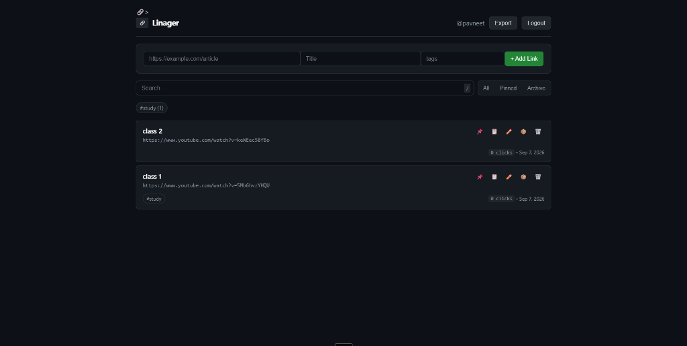
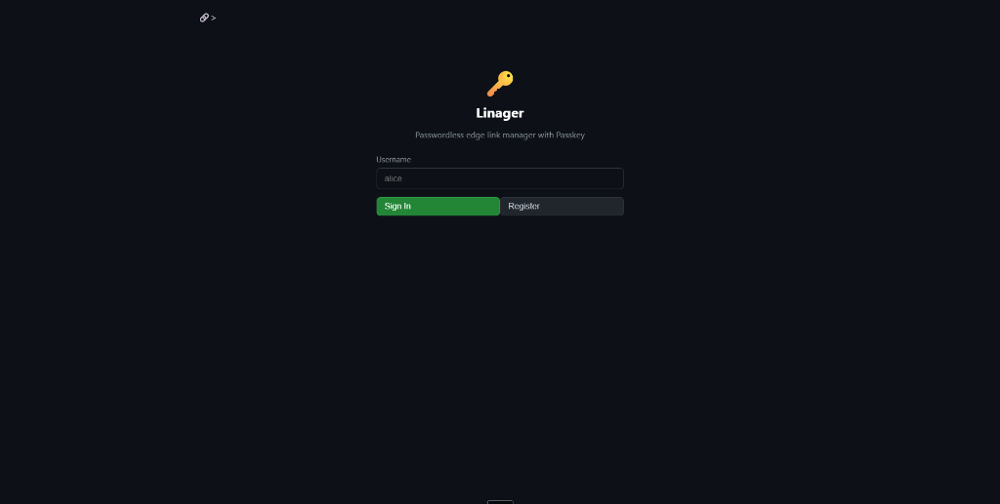

What is Linager?
Linager (short for Link Manager) is a fast, clean, and distraction-free online bookmark hub designed to solve one simple daily problem: saving links you find on one device, and opening them instantly on any other device.
There are no advertisements, no bloated sidebars, no tracking cookies, and best of all: no passwords to remember or forget. You sign in using modern Passkeys (your fingerprint, face recognition, or password managers like Proton Pass, Apple Keychain, or Windows Hello).

Why I Built It
How many times have you emailed yourself a link, sent a WhatsApp message to your own number, or saved a URL in a messy browser bookmark folder that only exists on your work computer?
Most existing bookmark managers fall into two categories:
- Too bloated: Heavy apps that ask for your email address, send confirmation codes, force paid subscriptions, and take five seconds just to load.
- Too fragmented: Browser-specific sync solutions (like Chrome or Safari bookmarks) that don't easily cross over if you use an iPhone alongside a Windows desktop or an Android phone with a Mac.
I wanted a web page that opens in under 30 milliseconds, lets me paste a link in one click, and lets me access it anywhere without ever having to type a password.
The Magic of Passkeys (Zero Passwords)
Instead of the old-school username-and-password model, Linager uses WebAuthn Passkeys. When you register with just a username:
- Your device (or password extension like Proton Pass) generates a unique digital key pair.
- The secure secret key stays locked safely inside your device or password manager.
- Linager only stores the public verification key.

Because there is no password stored on any server, it is impossible for your account to be stolen in a data breach or guessed by brute force. It's security that actually makes life easier.
What You Can Do with Linager
- 📌 Pin Daily Favorites: Keep your top references or ongoing study materials permanently docked at the top.
- 🏷️ Tag Everything: Organize with hashtags like
#study,#dev, or#videos. Tap any tag badge to immediately filter your collection. - ⚡ Instant Keyboard Search: Press the / key anywhere on your keyboard to instantly jump to the search bar and filter your links in real time.
- 📈 Click Tracking & Short Links: Every saved link gets a short redirection link (
/r/:id) that automatically counts how many times you or your team have visited it. - 📋 One-Click Copy: Grab direct links cleanly to your clipboard without opening the URL.
- 💾 Offline JSON Backup: Hit Export at any time to download an instant, complete JSON file of all your saved bookmarks.
Under the Hood (For the Curious)
For those who love clean, minimalist tech architecture, Linager is built following the /ponytail design philosophy — maximum performance with zero wasted code:
- Cloudflare Workers: Deployed as a lightweight serverless isolate running across worldwide edge datacenters.
- Turso DB (libSQL): Distributed SQLite running at edge speeds over HTTP.
- Zero Frontend Frameworks: No React, no Vue, and no massive JavaScript bundles to download. The entire responsive user interface is written in pure vanilla HTML, CSS, and modern JavaScript.
- Stateless Edge Authentication: Challenges are signed using HMAC-SHA256 and carried via secure HTTP-only cookies, eliminating memory loss between ephemeral edge worker nodes.
Try It Out & Source Code
Linager is completely free, open-source, and live on the internet right now. You can try it yourself or host your own copy in less than 5 minutes: